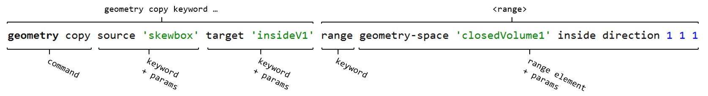

The Range Phrase
The term range phrase is a more explicitly descriptive way to refer to what is commonly referred to elsewhere in this documentation as the range. The components that make up a range phrase (range keyword + range elements), seen in command signatures as <range>, are illustrated in the image below:
{kind=link}
The brackets above the command indicate the command signature of the geometry copy command. The brackets below the command break down this particular instance of the command to its components. Where a command signature indicates a <range> (brackets above), this will always start with the range keyword and contain at least one range element (as broken down in the brackets below). A <range> might also include optional logical keywords or the extent keyword (though neither are shown in the example above).
Where range elements are concerned, the main thing to observe is that a range element begins with an element keyword accepted by the initial range keyword (see the Range Phrase Keyword Reference for a list of these), and normally ends when:
- all its parameters are specified, or
- when a new range element keyword is introduced, or
- if it is terminated with the
notkeyword (see Logical Operations in A Range Phrase for more information).
| Was this helpful? ... | UDEC © 2018, Itasca | Updated: Mar 15, 2024 |